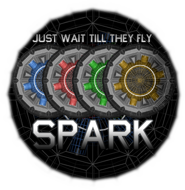

Spark
History
The Spark project was inspired by a game called ARC (Attack Retrieve Capture) that didn't survive a series of corporate mergers. Since the rights to the artwork and sounds were not released Spark used all new original graphics/sound and was coded from scratch in Java. This was my first project that was cross-platform and correctly runs on Windows/Linux/Mac OSX.
Gameplay
The main goal in Spark is simply to capture the flag and defend your own. In order to do this you are armed with primary lasers and 3 special weapons. The first special weapon is a Missile. Many players combine a missile shot with a laser which will instantly kill a target if you hit them. The second special weapon is a grenade. It explodes and does splash damage around the map. The third weapon is called a bouncy. It's a laser shot that bounces off the walls until it hits somebody. Bouncies are difficult to master but expert players are very good with them.
Current Status
The Spark project was sold to a group of community members who are running the game under the name "Armor Critical". Click here to visit ArmorCritical.com
As long as this project exists I have agreed not to compete with it or release any code. If the project is retired I will either bring back Spark or find a new leader to run the project.